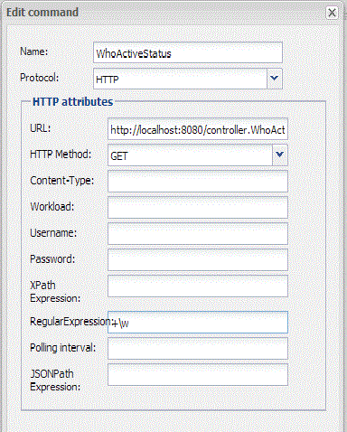

|
This page last changed on Jan 04, 2014 by dclaeys.
Hi,
I bought the book of Othmar Kyas - How To Smart Home.
I am currently at the end of chapter 7, but I am really getting stuck at chapter 7.6
In chapter 7 you can make a Smartphone Based Presence Detection.
Now I got all the scripts working etc...
However the further integration to my smartphone does not seem to work.
Basically to make a sensor we make a small HTML file that can hold the status (Blocked /Idle/Active) but somehow I can not get this working properly, even i follow all the instructions from the book.

I tried many thinks but nothing seems to work at this moment.
Please help me.
Thanks,
Regards,
Dieter
|
Ok, I got it working.
I reinstalled java and the controller
Still some issues...its not showing the complete "On" or "Off" text, but just the first letter...
Anybody has an idea what i did wrong?

Posted by dclaeys at Jan 05, 2014 03:46
|
|
Hi Dieter,
I got the book too from Amazon but for some reason I am unable to get any packets in windump. When I type in the command, it stays saying Listening XXXXX and no response even when I turn off the wifi on my iphone and turn it back on. However on wireshark I am getting the responses as described in the book. I am running it on a Win7 64 bit pc. Any advice?
Posted by iloveautomation at Jan 10, 2014 20:22
|
|
Ravi,
Did you install WinPcap also and is it running?
Posted by dclaeys at Jan 12, 2014 01:25
|
|
Hi Dieter, I reinstalled winpcap and now it seems to work now. Thanks for the tip.
Posted by iloveautomation at Jan 12, 2014 16:48
|
|
Hi.
You can tell more where to look / read? How to configure?
Posted by aleksey_z at Mar 11, 2015 18:37
|
|
I have bought the book and tried to do the MAC filtering staff... step by step . but i cannot integrate it with OR.
For the status part the regex commands are not extracting correctly.
eg. for the part with \w+
INFO 2015-09-05 20:20:22,196 (HTTP): received message: ÿþo f f
INFO 2015-09-05 20:20:22,196 (HTTP): result of regex evaluation: o
i also tried \w ,+\w, \w , (?s)\w ,etc nothing works
and for sending commands, they do not trigger at all with the option from the book(i am not sure where to check the errors for this). I also tried with making a .bat file run the .ps1 files and so on, and from double click in Windows they work fine but from OR they do not run. (I have another .bat file for pc restart and it works)
Is there something I can do?
Thank you.
Posted by ckbsmart at Sep 09, 2015 18:18
|
|
i bought this book and tried to get this working. In the end i gave up and resorted to pinging the static address set up for my mobile. If no response is received (it times out) then the phone is not around and hence you have your answer. There are posts on this aleady giving script examples...
HTH
Posted by nickbrookes76 at Sep 17, 2015 15:25
|
|
{kind=link}